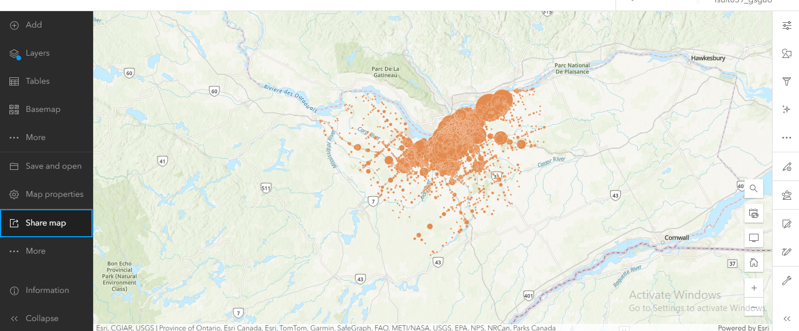

Traffic incidents
I processed and visualized the data using ArcGIS Online to enhance spatial understanding of traffic incidents. My main focus was to create an interactive ArcGIS Dashboard
Key Highlights:
- Uploaded a CSV file containing traffic collision data to ArcGIS Online.
- Created an interactive Web Map to visualize accident locations. 
- Developed an Instant App for quick and user-friendly interaction.
- Finally, I designed an ArcGIS Dashboard to present key metrics and insights, including the total number of cyclist and pedestrian collisions. I also added a location selector for filtering.
- Web mapping and interactive application development
- Dashboard design for geospatial data visualization.